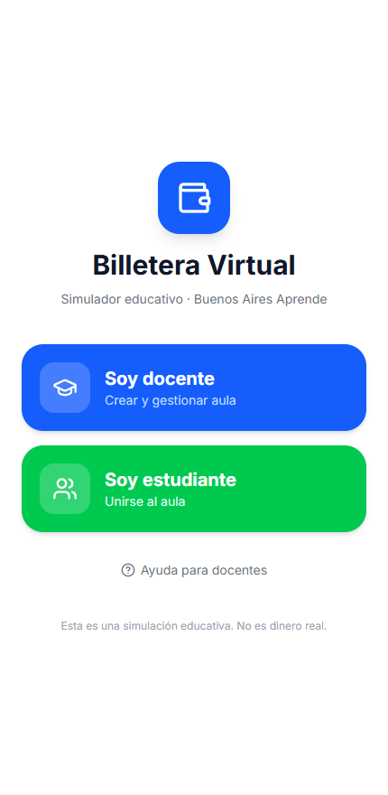
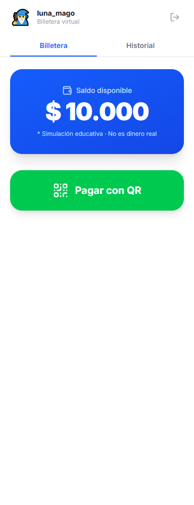
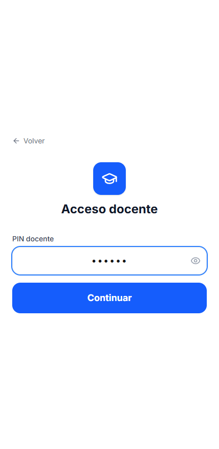
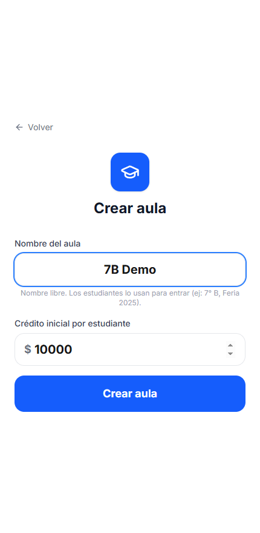
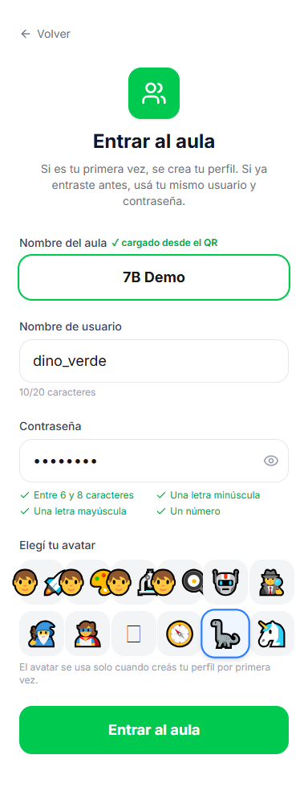
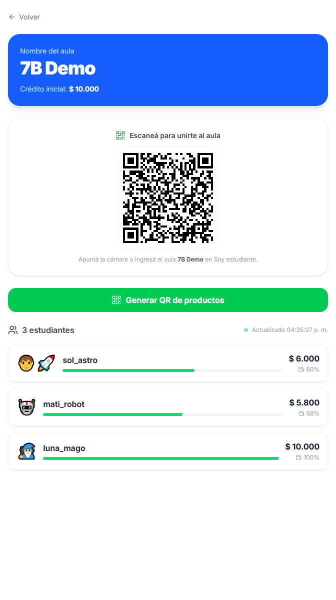
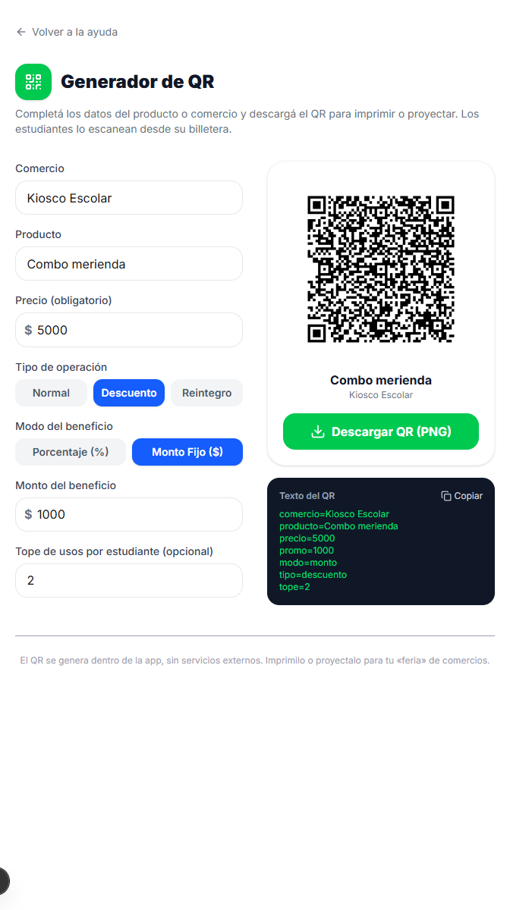
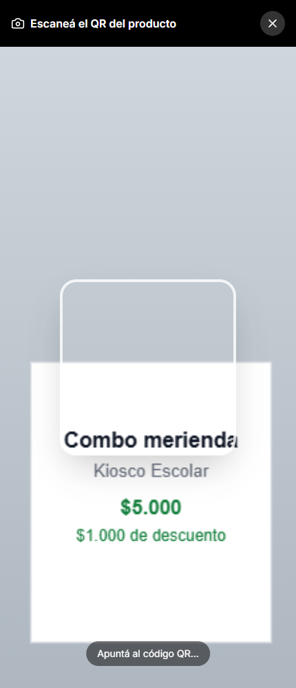
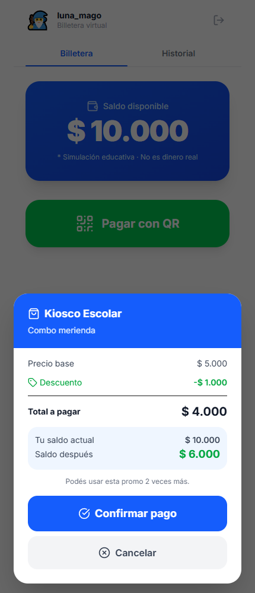
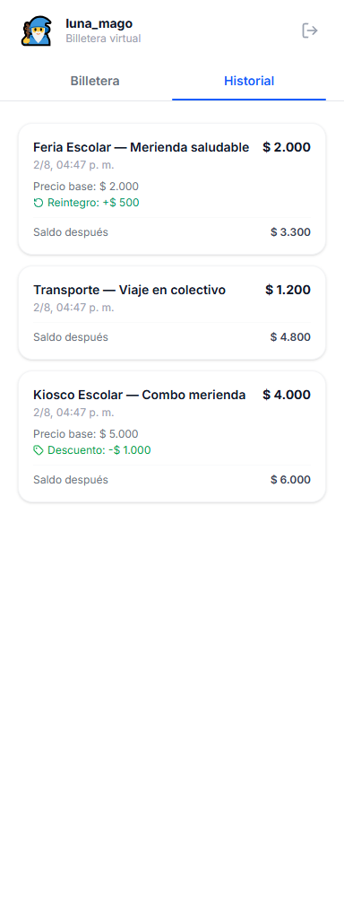

Cómo armar la actividad de dinero digital en el aula: crear el aula, generar los QR de los comercios y acompañar a los estudiantes durante la simulación.
Guía completa paso a paso6° y 7° grado
Buenos Aires Aprende · Simulación educativa — no es dinero real
¿Qué vas a encontrar?
Qué es (y qué no es) esta app
Antes de la clase: checklist
Crear el aula
Que entren los estudiantes
El panel en vivo
Generar los QR de los comercios
Los 5 tipos de operación
Armar los cartelitos e imprimirlos
Qué ve y qué hace el estudiante
Cuando algo sale mal
Cerrar la actividad y reflexionar
Preguntas frecuentes
💡
1 · Qué es (y qué no es) esta app
Es un simulador de billetera virtual: cada estudiante recibe un crédito ficticio y "paga" escaneando los QR de los comercios que vos armás.
No es dinero real, no hay pasarela de pago, no se conecta con ningún banco ni con Mercado Pago.
No se piden datos personales. Cada chico entra con un apodo (usuario), una contraseña de la actividad y un avatar. Nada más.
Se usa desde el celular o la tablet de cada estudiante (para escanear con la cámara) y desde tu compu o el proyector para el panel del aula.
La dirección de la app:billetera-virtual-educativa-production.up.railway.app — la misma para vos y para los chicos.

Pantalla inicial: de un lado entrás vos, del otro los chicos.

Lo que ve un estudiante al entrar: su saldo y el botón para pagar.
✅
2 · Antes de la clase: checklist
☐ Tenés a mano el PIN docente (está acá abajo).
☐ Decidiste el crédito inicial por estudiante (sugerencia: $10.000 para una actividad de 40 minutos).
☐ Armaste e imprimiste los QR de los comercios (punto 6 y 8) y los probaste escaneando con un celular.
☐ Los chicos saben que van a necesitar inventar un usuario y una contraseña y recordarlos durante la clase.
☐ Abriste la app unos minutos antes: la primera carga del día puede tardar unos segundos.
PIN DOCENTEba2026Se ingresa una sola vez, al entrar por “Soy docente”. Es el mismo para todas las docentes.
Importante — la cámara: el escáner solo funciona si entran por la dirección de arriba (que es segura, https). Si les pasás una dirección que empiece con http://192.168... o localhost, el celular no deja abrir la cámara.
🏫
3 · Crear el aula
Entrá a la app y tocá “Soy docente”.
Ingresá el PIN docente (ba2026) y tocá Continuar. Si te equivocás, avisa “PIN incorrecto”.
Escribí el nombre del aula. Es texto libre: 7° B, Feria 2026, Ciudad Cashless. Ese nombre es lo que los chicos van a escribir para entrar.
Poné el crédito inicial por estudiante (número entero mayor a cero).
Tocá Crear aula y quedás parado en el panel del aula.
Ojo con los nombres repetidos: si ya existe un aula activa con ese nombre, la app avisa “Ya existe un aula activa con ese código”. Sumale la fecha o el turno para que sea único: 7°B 12-08, 7°B tarde.
Consejo: el nombre lo van a tipear chicos de 11 años en un celular. Cuanto más corto y sin símbolos raros, mejor.

Paso 2: el PIN docente.

Pasos 3 y 4: nombre del aula y crédito inicial.
📲
4 · Que entren los estudiantes
Dos caminos: escanear el QR “Escaneá para unirte al aula” que aparece en tu panel (proyectalo), o entrar a la app, tocar “Soy estudiante” y escribir el nombre del aula.
Cada estudiante completa: usuario (hasta 20 caracteres), contraseña y avatar.
La contraseña tiene que cumplir 4 reglas —la pantalla las va marcando en verde—:
Regla
Ejemplo válido
Ejemplo que falla
Entre 6 y 8 caracteres
Dino2026 Sol12Ab
Ab1 (muy corta)
Al menos una minúscula
DINO2026
Al menos una mayúscula
dino2026
Al menos un número
DinoVerde
La primera vez que entran se les crea el perfil con el crédito inicial. Las veces siguientes entran con el mismo usuario y contraseña y recuperan su saldo y su historial.
El usuario es por aula: el mismo apodo en dos aulas distintas son dos perfiles distintos, cada uno con su propio saldo.
El avatar se elige solo al crear el perfil; después ya no se cambia.

Cuando entran por el QR, el nombre del aula ya viene cargado. Las 4 reglas de la contraseña se marcan en verde a medida que se cumplen.
No hay “olvidé mi contraseña”. Si un chico no la recuerda, la salida es entrar con un usuario nuevo — pero arranca de cero con el crédito inicial y pierde el historial anterior. Pediles que la anoten en la carpeta apenas la crean.
📊
5 · El panel en vivo
Es la pantalla que se abre al crear el aula. Proyectala: se actualiza sola cada 5 segundos, no hace falta refrescar.
Arriba: el nombre del aula en grande y el crédito inicial.
El QR para unirse, para que los chicos entren sin tipear.
Un botón directo a Generar QR de productos.
La lista de estudiantes conectados: avatar, apodo, saldo actual y una barra que muestra qué porcentaje del crédito inicial le queda.

El panel real del aula: el QR para unirse y los tres estudiantes con su saldo. La barra verde muestra cuánto les queda del crédito inicial.
Lo que el panel no hace: no podés editar saldos, borrar movimientos ni sacar a un estudiante. Es una pantalla de seguimiento. Si algo se desvirtúa, se resuelve creando un aula nueva.
🔳
6 · Generar los QR de los comercios
Desde el panel del aula (o desde Ayuda) entrá a Generar QR de productos.
Completás: comercio, producto, precio, tipo de operación, el beneficio y, si querés, un tope de usos por estudiante.
El QR se dibuja al instante y lo bajás con Descargar QR (PNG). Se genera dentro de la app, sin mandar nada a ningún servicio externo.
Repetís uno por cada producto de la feria. Un puesto puede tener varios QR (uno por producto).

El generador: a la izquierda cargás los datos, a la derecha aparece el QR y el texto exacto que lleva adentro.
Probalos antes de la clase: escaneá cada QR con un celular. Si el lector muestra el texto comercio=… precio=…, está bien armado.
¿Qué tiene adentro el QR? Texto plano, una línea por dato. Si preferís usar un generador online de QR de texto, copiá exactamente este formato:
Valor en pesos simulados. Número entero, sin puntos ni centavos.
comercio
No
Nombre del puesto (texto libre). Si falta, dice “Comercio”.
producto
No
Nombre del producto (texto libre). Si falta, dice “Producto”.
tipo
No
normal · descuento · reintegro. Por defecto normal.
modo
No
porcentaje o monto. Por defecto porcentaje.
promo
No
El valor del beneficio: el % o los $ según el modo.
tope
No
Cuántas veces puede usar esa promo cada estudiante.
🧮
7 · Los 5 tipos de operación
Tipo
Qué pasa
Ejemplo
Pago simple tipo=normal
Se descuenta el precio, sin beneficio.
Viaje en colectivo $1.200 → paga $1.200
Descuento %
Paga el precio menos el porcentaje.
Cartulina $3.000 con 20% → paga $2.400
Descuento $
Paga el precio menos un monto fijo.
Combo $5.000 menos $1.000 → paga $4.000
Reintegro %
Paga todo y le vuelve un porcentaje al saldo.
Merienda $4.000 con 25% → paga $4.000 y recupera $1.000
Reintegro $
Paga todo y le vuelve un monto fijo.
Entrada $8.000 con $1.500 → paga $8.000 y recupera $1.500
Sobre el tope de usos. Sirve para promos “solo 2 veces por persona”. Tres cosas que conviene saber:
El tope solo cuenta en descuento y reintegro. En un pago simple no limita nada.
Se cuenta por combinación exacta de comercio + producto + precio + beneficio. Si cambiás una sola letra del producto, para la app es otra promo y el contador arranca de nuevo.
Cuando un chico llega al tope, la app le ofrece pagar sin la promo (precio completo) o cancelar. Es un buen momento pedagógico.
Cuidado al cargar un reintegro por monto fijo: si el reintegro es mayor que el precio, el estudiante termina con más plata de la que gastó. Salvo que lo busques a propósito, revisá que el monto sea menor al precio.
🖨️
8 · Armar los cartelitos e imprimirlos
Tamaño: mínimo 5 × 5 cm el QR. Si el puesto va a tener fila, mejor 8 × 8 cm.
Contraste: negro sobre blanco. Nada de logos, dibujos ni texto encima del código, y dejale el margen blanco alrededor (el generador ya lo agrega).
Debajo del QR, en letra grande: comercio, producto, precio y la promo escrita en castellano (“20% de descuento”, “te devolvemos $1.500”). Que puedan anticipar la cuenta antes de escanear es parte de la actividad.
Una hoja por puesto funciona mejor que muchos QR juntos: evita que el celular lea el de al lado.
Si los vas a reusar en varios cursos, plastificalos. Y guardá los PNG: se reimprimen igual.
También se pueden proyectar en el pizarrón, de a uno por vez.
Así se ve un cartelito completo: código arriba, la información legible abajo.
👦
9 · Qué ve y qué hace el estudiante
Entra al aula y ve su saldo en grande, con la aclaración de que es una simulación.
Toca “Pagar con QR” → se abre la cámara → apunta al cartelito.
Antes de descontar nada, la app le muestra una ventana con el detalle: producto, precio, descuento o reintegro que aplica, y con cuánto saldo queda. Ahí confirma o cancela.
Al confirmar ve el aviso “¡Pago realizado!” con el saldo nuevo, y su saldo aparece actualizado en tu panel.
En la pestaña Historial tiene todos sus movimientos con precio, beneficio y saldo resultante.

Paso 2: así se abre la cámara. El recuadro blanco es la guía para encuadrar el QR.

Paso 3: el detalle, antes de descontar.

Paso 5: el historial.
El paso 3 es el corazón de la actividad: pediles que calculen mentalmente el resultado antes de tocar confirmar y después lo comparen con lo que muestra la pantalla.
🛟
10 · Cuando algo sale mal
Lo que ven en pantalla
Qué pasó / qué hacer
“Necesitamos acceso a la cámara para leer el QR”
El celular pidió permiso y se rechazó. Volver a entrar y tocar Permitir; si no aparece, revisar los permisos del navegador.
“No se pudo iniciar la cámara”
Casi siempre entraron por una dirección insegura. Que usen el enlace oficial (https) del punto 1.
“El precio del QR no es válido”
El QR se armó sin precio o con un precio no numérico. Rehacerlo desde el generador.
“No se pudo leer la promoción”
El tipo o el modo están mal escritos (ej. tipo=descuentos). Ojo si lo escribiste a mano.
“Saldo insuficiente…”
No le alcanza. No se descuenta nada. Usalo como disparador: ¿qué resigna? ¿busca una promo mejor?
“Alcanzaste el límite de esta promoción”
Llegó al tope de usos. Puede pagar el precio completo o cancelar.
“No encontramos esa aula…”
El nombre del aula está mal escrito (fijate en espacios, tildes y el símbolo °) o el aula se creó con otro nombre.
“Usuario o contraseña incorrectos”
Ese apodo ya existe en el aula con otra contraseña. Que pruebe de nuevo o elija otro apodo.
La cámara no engancha el código
Más luz, menos reflejo (los plastificados brillan), pulso firme y el QR entero dentro del recuadro.
🎯
11 · Cerrar la actividad y reflexionar
Antes de terminar, pediles que abran el Historial y calculen cuánto gastaron en total y cuánto les quedó.
Preguntas que funcionan: ¿qué promo convino más? ¿Un 20% de descuento es siempre mejor que $1.000 de descuento? ¿Y un reintegro es lo mismo que un descuento, si te quedaste sin plata en el momento?
Los que se quedaron sin saldo son el mejor caso para discutir prioridades y presupuesto.
Comparen el panel proyectado: por qué dos chicos con el mismo crédito inicial terminaron tan distinto.
Para la próxima clase: creá un aula con otro nombre. Los saldos e historiales del aula anterior quedan guardados, pero un aula nueva arranca a todos de cero con el crédito inicial.
❓
12 · Preguntas frecuentes
¿Cuántos estudiantes entran en un aula? No hay límite fijado. Un curso entero funciona sin problema.
¿Necesitan instalar algo? No. Se abre en el navegador del celular. Tampoco hace falta que tengan cuenta de mail.
¿Y si un chico no tiene celular? Que trabajen de a dos, o que uno escanee y el otro haga la cuenta. La discusión en parejas suele rendir más.
¿Se puede quedar con saldo negativo? No: si no le alcanza, la operación se rechaza.
¿Puedo darle más crédito a alguien durante la clase? No desde la app. El crédito se define al crear el aula. Un “bono” se puede simular con un QR de reintegro de precio bajo y reintegro alto.
¿Puedo reusar el mismo nombre de aula otro día? Mientras el aula anterior siga activa, no. Agregale la fecha.
¿El PIN es distinto para cada docente? No: es uno solo para toda la escuela (ba2026). Se usa únicamente para crear el aula; los chicos no lo necesitan nunca. Si hiciera falta cambiarlo, lo cambia el referente técnico.
¿Se guardan datos de los chicos? Solo el apodo que inventaron, el avatar, el saldo y los movimientos de la simulación. Nada de nombre real, mail ni documento.
¿Y si se corta internet? Sin conexión no se puede escanear ni actualizar saldos. Tené a mano una versión en papel de la consigna por las dudas.
Billetera Virtual Educativa · Manual del docente · Buenos Aires Aprende · Simulación educativa, no es dinero real